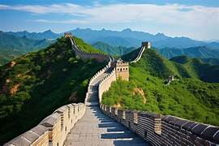

Nombre: Gran Muralla China
País: China
Año de construcción: Aproximadamente desde el siglo VII a. C. hasta el siglo XVII.
La Gran Muralla China fue construida durante diferentes dinastías para proteger el territorio chino de invasiones provenientes del norte. Su construcción duró varios siglos y fue ampliada y reforzada por distintos emperadores. Actualmente es uno de los monumentos más famosos del mundo y un símbolo de la historia y cultura china.
Aunque muchas personas creen que puede verse desde el espacio a simple vista, esto es un mito. Su anchura es demasiado pequeña para distinguirla fácilmente desde la órbita terrestre.
Siguiente Maravilla →